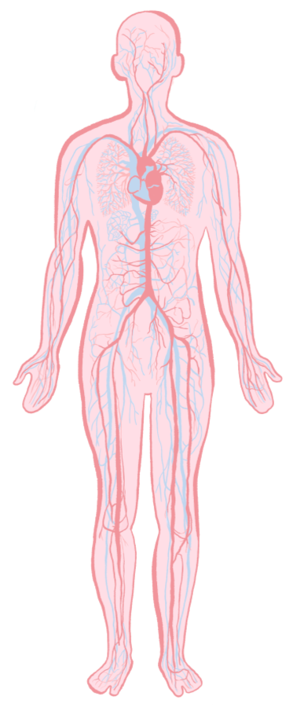

Circulatory System
The circulatory system is the body’s internal transport network, responsible for moving blood, nutrients, oxygen, carbon dioxide, hormones, and other essential substances to and from cells.

Heart Overview
The heart is a powerful muscular organ about the size of a fist, located slightly left of center in the chest. It consists of four chambers, cardiac muscle tissue (myocardium), and specialized electrical conduction pathways. The heart wall has three layers: the outer epicardium, the thick muscular myocardium, and the inner endocardium. The heart beats approximately 100,000 times per day, pumping about 2,000 gallons of blood through the circulatory system, delivering oxygen and nutrients to every cell in the body.